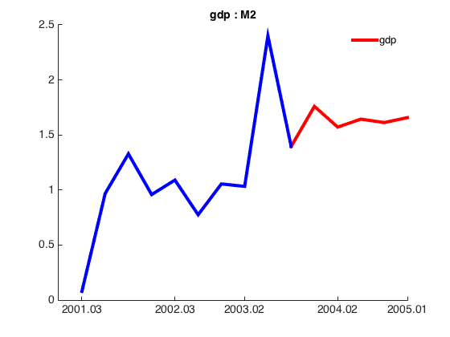
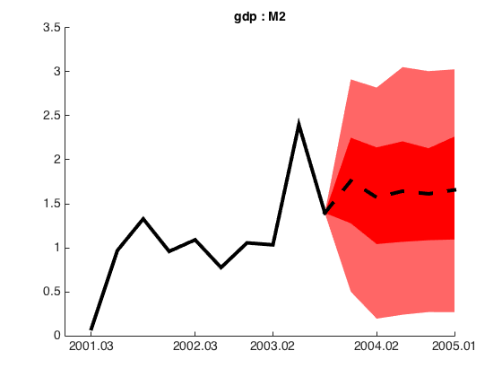
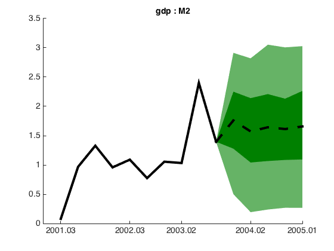
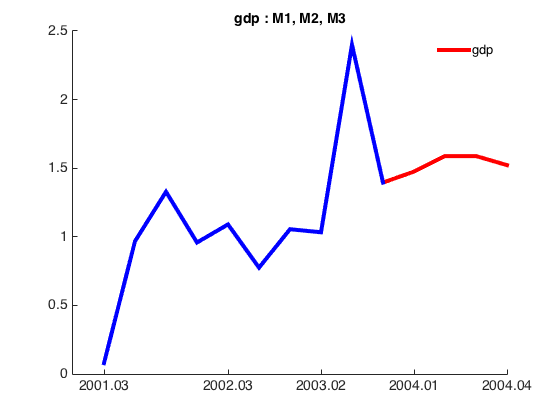
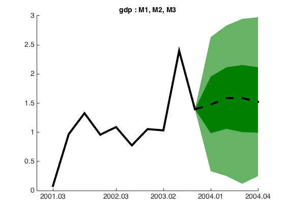
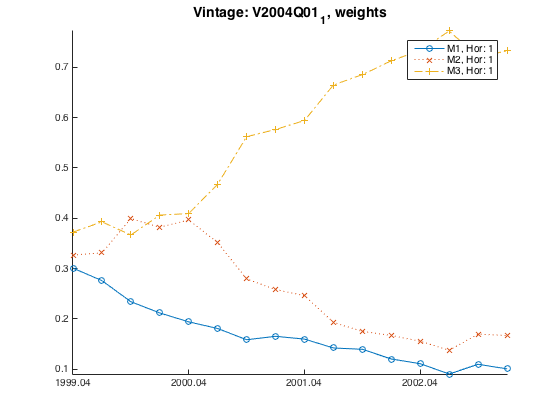
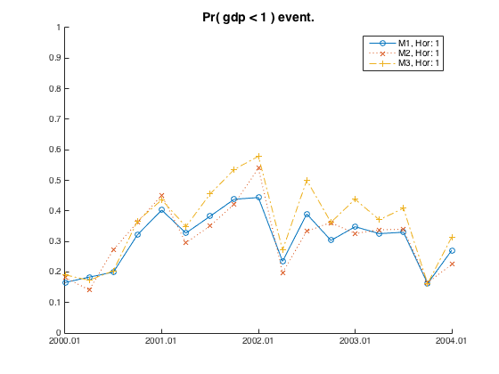
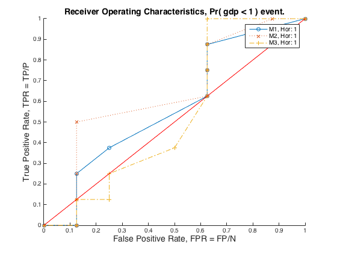
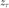
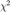

Making Reports Using Report Functionality
Contents
- Introduction
- 1(a) Individual models (estimation: Estimation)
- Plot point forecasts
- Plot density forecasts
- 1(b) Combination models (estimation: Estimationcombination)
- Plot the weights and scores
- 2) PROFOR objects
- Plot Total Economic Loss (TEL)
- Plot the probability of these events
- Plot the Relative Operating Characteristics (ROCs)
- Real-time tables of scores or weights
- Produce tables for various scoring methods
- Plot the Probability Integral Transforms (PITs)
- View the table of tests based on the PITs
- Produce MSPE for point forecasts
- Evaluate point forecasts
The reporting functionality works on two types of object:
1. Model
(a) estimation: Estimation
(b) estimation: Estimationcombination
2. Profor
Prerequisite: First run proforExample.m, i.e. the Real-Time Data profor example, matlab code.
See the matlab code corresponding to edit and run this Using Report Functionality help file.
Introduction
Initialize screen output:
format long
For an overview of the Reporting functionality, type:
help Report
Report Provides reporting methods for individual, combination and Profor
model objects.
Report Properties:
Report Methods:
Report - Constructor
plotPointForecast - Plots the point forecast.
plotDensityForecast - Plots the density forecast.
plotWeightsOrScores
plotTotalEconomicLoss
plotProbabilityEventThreshold
plotRelativeOperatingCharacteristics
plotProbabilityIntegralTransforms
plotPointForecastHistorical
plotDensityForecastHistorical
getProbabilityIntegralTransformsTests
evaluatePointForecast
getRealTimeTable
getDensityForecastScoreTable
Usage:
See the reporting <a href="matlab: opentoline(./help/helpFiles/htmlexamples/makingReportsExample.m,1)">example file</a>
In general, for each of the methods of the Report class, checking the help documentation tells what must be specified by the researcher. For example, to plot the density forecast fan chart, type:
help Report.plotDensityForecast
plotPointForecast - Plots the forecast density.
Input:
obj [Report]
vblNames [cell](1xn) Containing variable mnemonics to plot.
maxHistoryPeriods [int] e.g. 1.
USAGE: plotDensityForecast(obj, vblNames)
e.g. reportObj.plotDensityForecast( {'gdp', 'cpi'})
Can also be used with not input argument (program uses Report defaults),
i.e:
reportObj.plotDensityForecast
Also, see usage in the reporting <a href="matlab: opentoline(./help/helpFiles/htmlexamples/makingReportsExample.m,1)">example file</a>
1(a) Individual models (estimation: Estimation)
Load an individual model for a particular data vintage (not necessarily the last):
m1 = Model.loado(fullfile(proforStartup.pfRoot, 'help', 'helpFiles', ... 'htmlexamples', '+results', 'resultsProfor', 'models', 'M2', 'results', ... '2004.01_1', 'm'));
First, construct the Report object:
r1 = Report(m1);
Check out the settings, to change the way things look:
disp(r1)
Report with properties:
savePath: '/Users/shaunvahey/profor/Matlab/Profor/help/helpFiles/h...'
tableOptions: [1x1 TableOptionSettings]
plotOptions: [1x1 PlotOptionSettings]
rawDataTable: [0x0 table]
resultTable: [0x0 table]
output: [1x1 struct]
Check the methods of the Report object:
methods(r1)
Methods for class Report:
Report plotPointForecastHistorical
evaluatePointForecast plotProbabilityEventThreshold
getDensityForecastScoreTable plotProbabilityIntegralTransforms
getProbabilityIntegralTransformsTests plotRelativeOperatingCharacteristics
getRealTimeTable plotTotalEconomicLoss
plotDensityForecast plotWeightsOrScores
plotDensityForecastHistorical
plotPointForecast
Call "methods('handle')" for methods of Report inherited from handle.
Plot point forecasts
Plot a point forecast using 'r1.plotPointForecast' with the given variable, specifying the number of periods before the evaluation period starts 'nEstimationDatesToInclude'.
nEstimationDatesToInclude = 10;
Plot individual series:
variableToPlot = 'gdp';
r1.plotPointForecast( variableToPlot, nEstimationDatesToInclude)
 Or plot a list of series:
variableToPlot = {'gdp', 'gdpctpi'};
r1.plotPointForecast( variableToPlot, nEstimationDatesToInclude)

Plot density forecasts
Density forecasts can be plotted for a given variable, displaying a number of observations prior to the forecast origin.
Set the colour of the density map by using the 'plotOptions' settings. For example, to get something similar to the Bank of England charts:
r1.plotOptions.densityColor = {'r'};
To control the quantiles used in the density forecast, set the option in 'Reports.plotOptions':
r1.plotOptions.quantiles = [0.10; 0.30; 0.70; 0.90] .* 100;
r1.plotDensityForecast({'gdp'}, nEstimationDatesToInclude)
 For the Norges Bank style colours in the charts:
r1.plotOptions.densityColor = {'f'};
r1.plotDensityForecast({'gdp'}, nEstimationDatesToInclude)
 1(b) Combination models (estimation: Estimationcombination)
For a combination model:
cm = Model.loado(fullfile(proforStartup.pfRoot, 'help', 'helpFiles', ... 'htmlexamples', '+results', 'resultsProfor', 'models', 'Combination_gdp', ... 'results', '2004.01_1', 'm'));
Construct a Report object with the combination model:
r2 = Report(cm);
Plot the point and density forecasts in the same manner as for individual models. Note, this uses the new Report object 'r2', which refers to the combined forecast.
r2.plotPointForecast( {'gdp'}, nEstimationDatesToInclude)
r2.plotDensityForecast({'gdp'}, nEstimationDatesToInclude)
  Plot the weights and scores
Using 'plotWeightsorScores', choose the weights (or scores), the model names and the forecast horizons:
forecastHorizonToPlot = 1; r2.plotWeightsOrScores('weights', {'M1','M2', 'M3'}, forecastHorizonToPlot)
2) PROFOR objects
This works with the output from 'proforExample'. Therefore, the researcher must point to the location of the batch files and results folder from a PROFOR experiment:
p = Profor; p.savePath = fullfile(proforStartup.pfRoot, 'help', 'helpFiles', ... 'htmlexamples', '+results', 'resultsProfor'); p.modelSetupPath = fullfile(proforStartup.pfRoot, 'help', 'helpFiles', ... 'htmlexamples', '+batchFiles', 'batchFilesProfor');
Generate a report using:
r3 = Report(p);
Plot Total Economic Loss (TEL)
Check the help settings for Total Economic Loss (TEL) in order to set the options for the function:
help Report.plotTotalEconomicLoss
plotTotalEconomicLoss - Plots Total Economic Loss (TEL)
Forecasts are real-time and outturns are the last available vintage.
TEL defined as TEL = L * contingency(2, 1) + C * (Warning True). The cdf for
the prob(X < z) is for the score method: logScoreD.
N.B. The prob(X < z) is taken for concurrent date / evaluation periods, i.e.
(OO.01, 00.01).
The contingency table is defined for an Event and Test as:
Event = Prob( X < z )
Test = Prob( X < z) > R = (C/L).
Event
Test Y N
Y (1,1) (1,2)
N (2,1) (2,2)
Where:
(1,1) - True Positive
(1,2) - False Positive
(2,1) - False Negative
(2,2) - True Negative
And Warning true = (1,1) + (1,2).
Input:
obj [Report]
vblNames [str] e.g. 'gdp'
eventThreshold [double] e.g. 1.5
modelNames [cell][str] e.g. {'M1', 'M2'}
defaultModelName [str] e.g. 'M1'
forecastHorizon [double] e.g. 1
Output:
figure [figure]
Can also be used with not input argument (program uses Report defaults),
i.e:
reportObj.plotTotalEconomicLoss
Reference:
Murphy, A.H. and Winkler, R.L. (1987), "A general framework for forecast
verification", Monthly Weather Review, 115, 1330-1338.
Usage:
plotTotalEconomicLoss(obj, vblNames, eventThreshold, modelNames, ...
defaultModelName, forecastHorizon)
e.g.
Report.plotTotalEconomicLoss('gdp', 1.5, {'M1', 'M2', 'M3'}, ...
'M1', 1)
Set the inputs for the TEL plot. The researcher selects the threshold for the event of interest, the variable name, the benchmark model, the models to be compared, and the forecast horizon, respectively. Note, the same eventThreshold must be included in the Profor experiment before generating the report -- here the experiment was run with proforExample.m.
eventThreshold = 1.0; vblName = 'gdp'; defaultModelName = 'M1'; modelNames = {'M1', 'M2', 'M3'}; forecastHorizon = 1;
Plot TEL against relative cost, R=C/L, where 0<R<1. Note that 'leftHandSide' tells PROFOR to define the event below the threshold, e.g. GDP < 1.0 event. (And, rightHandSide means above the threshold e.g. GDP > 1.0 event).
TEL is plotted relative to the benchmark here. So, a 40 on the plot y-axis indicates a 60 percent improvement over the benchmark, normalized to 100.
TEL is evaluated against the last available vintage of data using the real time latest available forecasts.
By default, the outturns for forecast evaluations are set to the latest available vintage with the reporting functionality.
r3.plotTotalEconomicLoss(vblName, eventThreshold, {'M1', 'M2', 'M3'}, ...
defaultModelName, forecastHorizon, 'leftHandSide')
Starting parallel pool (parpool) using the 'local' profile ... connected to 2 workers.

Plot the probability of these events
Plot the time series of forecast probabilities (for the same event):
r3.plotProbabilityEventThreshold(vblName, eventThreshold, {'M1', 'M2', 'M3'}, ...
forecastHorizon, 'leftHandSide')
 Plot the Relative Operating Characteristics (ROCs)
The researcher controls the plot via the same imputs as the TEL plot and the probability plot (described above). The help provides a description and a reference paper for ROCs:
help plotRelativeOperatingCharacteristics
--- help for Report/plotRelativeOperatingCharacteristics ---
plotRelativeOperatingCharacteristics - Plots Relative Operating Characteristics.
Forecasts are real-time and outturns are the last available vintage.
Defined as True positives (hits) rate vs false positives (false alarms) rate.
The contingency table is defined on an Event for two cases and Test as:
eventType = 'leftHandSide':
Event = Prob( X < z )
eventType = 'rightHandSide':
Event = Prob( X > z )
Test = Event > R = (C/L).
Event
Test Y N
Y (1,1) (1,2)
N (2,1) (2,2)
Where:
(1,1) - True Positive
(1,2) - False Positive
(2,1) - False Negative
(2,2) - True Negative
NB, True positive rate = True Positive / Event Positive.
False positive rate = False Positive / Event Negative.
Input:
obj [Report]
vblNames [str] e.g. 'gdp'
eventThreshold [double] e.g. 1.5
modelNames [cell][str] e.g. {'M1', 'M2'}
defaultModelName [str] e.g. 'M1'
forecastHorizon [double] e.g. 1
eventType [str] e.g. 'leftHandSide'
Output:
figure [figure]
Can also be used with no input argument (program uses Report defaults),
i.e:
reportObj.plotRelativeOperatingCharacteristics
References:
% Zhou, Xiao-Hua; Obuchowski, Nancy A.; McClish, Donna K. (2002). "Statistical
Methods in Diagnostic Medicine". New York, NY: Wiley & Sons.
For econ literature on resolution and calibration see also
Galbraith, J.W. and S. van Norden (2011) "Kernel-based calibration
diagnostics for recession and inflation probability forecasts",
International Journal of Forecasting
Galbraith, J.W. and S. van Norden (2012) "Assessing Gross Domestic
Product and inflation probability forecasts derived from
Bank of England fan charts", Journal of the Royal Statistical
Society Series A - Statistics in Society
Usage:
plotRelativeOperatingCharacteristics(obj, vblNames, eventThreshold, modelNames, ...
forecastHorizon, eventType)
e.g.
Report.plotRelativeOperatingCharacteristics('gdp', 1.5, {'M1', 'M2', 'M3'}, ...
1, 'leftHandSide')
A well-performing model will lie above the 45 degree line on the ROC plot. To generate the ROC plot, with critical probability 0.5, run the following script:
r3.plotRelativeOperatingCharacteristics(vblName, eventThreshold, {'M1', 'M2', 'M3'}, ...
defaultModelName, forecastHorizon, 'leftHandSide')
 Real-time tables of scores or weights
Profor can recursively evaluate the real-time models when a new data vintage is released.
The results of this evaluation can be examined in MATLAB's table format. Check the help for this method:
help Report.getRealTimeTable
getRealTimeTable - Returns a real time table where at each vintage the current
outturns from that data vintage are used to construct the
values of interest (scores, weights etc).
Input:
obj [Report]
vblNames [str]
eventThreshold [double]
modelNames [cell][str]
forecastHorizon [double]
scoreMethod [str]
dataType [str] ('weights' or 'scores')
realTimeTableType [str] ('current' or 'full')
Full - all evaluation periods for every vintage
current - only evaluation periods corresponding to that vintage
Usage:
Can also be used with not input argument (program uses Report defaults),
i.e:
reportObj.getRealTimeTable
To understand realTimeTableType, consider an example of a full table.
scoreMethod = {'logScoreD'};
outType = 'scores';
realTimeTableType = 'full';
out = r3.getRealTimeTable(vblName, {'M1'}, forecastHorizon, ...
scoreMethod, outType, realTimeTableType, []);
out{1}
ans =
Model Periods V2000Q01 V2000Q02 V2000Q03 V2000Q04 V2001Q01 V2001Q02 V2001Q03 V2001Q04 V2002Q01 V2002Q02 V2002Q03 V2002Q04 V2003Q01 V2003Q02 V2003Q03 V2003Q04 V2004Q01
_____ _______ ________ __________________ __________________ __________________ __________________ __________________ __________________ __________________ __________________ __________________ __________________ __________________ __________________ __________________ __________________ __________________ __________________
M1 2000.01 NaN -0.889824013343808 -0.859950381976148 -0.859950381976148 -0.859950381976148 -0.859950381976148 -0.89545953589182 -0.89545953589182 -0.89545953589182 -0.89545953589182 -0.95465978571123 -0.95465978571123 -0.95465978571123 -0.95465978571123 -0.95465978571123 -1.12539526426164 -1.12539526426164
M1 2000.02 0 NaN -0.900736923665689 -0.900736923665689 -0.900736923665689 -0.900736923665689 -0.884278425005279 -0.884278425005279 -0.884278425005279 -0.884278425005279 -0.859404135824687 -0.859404135824687 -0.859404135824687 -0.859404135824687 -0.859404135824687 -0.910418153173117 -0.910418153173117
M1 2000.03 0 0 NaN -1.35180391189375 -1.35180391189375 -1.35180391189375 -1.51339390299732 -1.51339390299732 -1.51339390299732 -1.51339390299732 -1.95035356590375 -1.95035356590375 -1.95035356590375 -1.95035356590375 -1.95035356590375 -2.19315940647543 -2.19315940647543
M1 2000.04 0 0 0 NaN -1.05867703304537 -1.04676376429027 -0.984357383554183 -0.984357383554183 -0.984357383554183 -0.984357383554183 -1.02574745967885 -1.02574745967885 -1.02574745967885 -1.02574745967885 -1.02574745967885 -0.980350991628254 -0.980350991628254
M1 2001.01 0 0 0 0 NaN -1.00227335118252 -0.998100248741757 -0.998100248741757 -0.998100248741757 -0.998100248741757 -1.1481867629467 -1.1481867629467 -1.1481867629467 -1.1481867629467 -1.1481867629467 -1.17129917642828 -1.17129917642828
M1 2001.02 0 0 0 0 0 NaN -1.36521824883183 -1.36521824883183 -1.36521824883183 -1.36521824883183 -1.73868191666183 -1.73868191666183 -1.73868191666183 -1.73868191666183 -1.73868191666183 -1.32924260106479 -1.32924260106479
M1 2001.03 0 0 0 0 0 0 NaN -1.54284496078032 -1.54284496078032 -1.54284496078032 -1.35567546843893 -1.35567546843893 -1.35567546843893 -1.35567546843893 -1.35567546843893 -1.65497689243086 -1.65497689243086
M1 2001.04 0 0 0 0 0 0 0 NaN -1.22706069363063 -1.17370618801078 -1.0998815039909 -1.0998815039909 -1.0998815039909 -1.0998815039909 -1.0998815039909 -0.964595855002944 -0.964595855002944
M1 2002.01 0 0 0 0 0 0 0 0 NaN -1.19218415719171 -1.07592342338649 -1.07592342338649 -1.07592342338649 -1.07592342338649 -1.07592342338649 -0.989893384170373 -0.989893384170373
M1 2002.02 0 0 0 0 0 0 0 0 0 NaN -1.49538553435534 -1.49538553435534 -1.49538553435534 -1.49538553435534 -1.49538553435534 -1.1750636876608 -1.1750636876608
M1 2002.03 0 0 0 0 0 0 0 0 0 0 NaN -0.945166054651217 -0.945166054651217 -0.945166054651217 -0.945166054651217 -0.9199346967037 -0.9199346967037
M1 2002.04 0 0 0 0 0 0 0 0 0 0 0 NaN -1.23100842367188 -1.23100842367188 -1.23100842367188 -1.24758748481665 -1.24758748481665
M1 2003.01 0 0 0 0 0 0 0 0 0 0 0 0 NaN -1.08091541260194 -1.08091541260194 -1.08112227432161 -1.08112227432161
M1 2003.02 0 0 0 0 0 0 0 0 0 0 0 0 0 NaN -0.973704353988166 -0.980202026848474 -0.980202026848474
M1 2003.03 0 0 0 0 0 0 0 0 0 0 0 0 0 0 NaN -1.38375908557746 -1.38375908557746
M1 2003.04 0 0 0 0 0 0 0 0 0 0 0 0 0 0 0 NaN -1.12236495639841
M1 2004.01 0 0 0 0 0 0 0 0 0 0 0 0 0 0 0 0 NaN
This displays the scores of the real-time models evaluated using different data vintages. Note, that the `current' data vintage never includes the `current' time series observation -- macro data are released with a one period lag.
Run the table with 'realTimeTableType = 'full';' this delivers all NaNs because of the data release lag issue.
Run this again for the weights, with equal weights for the last observation (which can't be evaluated):
outType = 'weights'; out = r3.getRealTimeTable(vblName, {'M1'}, forecastHorizon, ... scoreMethod, outType, realTimeTableType, []); out{1}
ans =
Model Periods V2000Q01 V2000Q02 V2000Q03 V2000Q04 V2001Q01 V2001Q02 V2001Q03 V2001Q04 V2002Q01 V2002Q02 V2002Q03 V2002Q04 V2003Q01 V2003Q02 V2003Q03 V2003Q04 V2004Q01
_____ _______ _________________ _________________ _________________ _________________ _________________ _________________ _________________ _________________ _________________ _________________ _________________ _________________ _________________ _________________ _________________ __________________ __________________
M1 2000.01 0.333333333333333 0.322290060361436 0.320528384933266 0.320528384933266 0.320528384933266 0.320528384933266 0.309136872877121 0.309136872877121 0.309136872877121 0.309136872877121 0.31055923226898 0.31055923226898 0.31055923226898 0.31055923226898 0.31055923226898 0.312814306684519 0.312814306684519
M1 2000.02 0 0.333333333333333 0.314913998962036 0.314913998962036 0.314913998962036 0.314913998962036 0.304898644262742 0.304898644262742 0.304898644262742 0.304898644262742 0.312599020488738 0.312599020488738 0.312599020488738 0.312599020488738 0.312599020488738 0.304941212124737 0.304941212124737
M1 2000.03 0 0 0.333333333333333 0.276196656525262 0.276196656525262 0.276196656525262 0.262243311988132 0.262243311988132 0.262243311988132 0.262243311988132 0.25444024154995 0.25444024154995 0.25444024154995 0.25444024154995 0.25444024154995 0.239768525056077 0.239768525056077
M1 2000.04 0 0 0 0.333333333333333 0.278491174153695 0.279976565165908 0.263178656141468 0.263178656141468 0.263178656141468 0.263178656141468 0.25719582006038 0.25719582006038 0.25719582006038 0.25719582006038 0.25719582006038 0.241819333361138 0.241819333361138
M1 2001.01 0 0 0 0 0.333333333333333 0.248155252481318 0.232438507460099 0.232438507460099 0.232438507460099 0.232438507460099 0.222605620207516 0.222605620207516 0.222605620207516 0.222605620207516 0.222605620207516 0.208546286491533 0.208546286491533
M1 2001.02 0 0 0 0 0 0.333333333333333 0.214131638327263 0.214131638327263 0.214131638327263 0.214131638327263 0.219724272685268 0.219724272685268 0.219724272685268 0.219724272685268 0.219724272685268 0.192123408453873 0.192123408453873
M1 2001.03 0 0 0 0 0 0 0.333333333333333 0.188549418035027 0.188549418035027 0.188549418035027 0.186097661732338 0.186097661732338 0.186097661732338 0.186097661732338 0.186097661732338 0.176113956930503 0.176113956930503
M1 2001.04 0 0 0 0 0 0 0 0.333333333333333 0.172479838866199 0.169255658947265 0.165182178542731 0.165182178542731 0.165182178542731 0.165182178542731 0.165182178542731 0.162544671428854 0.162544671428854
M1 2002.01 0 0 0 0 0 0 0 0 0.333333333333333 0.195376930816733 0.175438294330744 0.175438294330744 0.175438294330744 0.175438294330744 0.175438294330744 0.162440009333673 0.162440009333673
M1 2002.02 0 0 0 0 0 0 0 0 0 0.333333333333333 0.187187193977935 0.187187193977935 0.187187193977935 0.187187193977935 0.187187193977935 0.157145680797008 0.157145680797008
M1 2002.03 0 0 0 0 0 0 0 0 0 0 0.333333333333333 0.166358629038051 0.166358629038051 0.166358629038051 0.166358629038051 0.142851651731893 0.142851651731893
M1 2002.04 0 0 0 0 0 0 0 0 0 0 0 0.333333333333333 0.144419900368959 0.144419900368959 0.144419900368959 0.121994789098609 0.121994789098609
M1 2003.01 0 0 0 0 0 0 0 0 0 0 0 0 0.333333333333333 0.130315816870218 0.130315816870218 0.10633447695938 0.10633447695938
M1 2003.02 0 0 0 0 0 0 0 0 0 0 0 0 0 0.333333333333333 0.118214644971039 0.0979213403737677 0.0979213403737677
M1 2003.03 0 0 0 0 0 0 0 0 0 0 0 0 0 0 0.333333333333333 0.114934808186574 0.114934808186574
M1 2003.04 0 0 0 0 0 0 0 0 0 0 0 0 0 0 0 0.333333333333333 0.100231267632509
M1 2004.01 0 0 0 0 0 0 0 0 0 0 0 0 0 0 0 0 0.333333333333333
Produce tables for various scoring methods
The researcher should experiment with the tables directly. However, PROFOR provides a helper method to break down the tables into different chunks. Check this against the real-time table above - the two correspond.
scoreMethod = {'logScoreD'};
requestedVintage = 2003.04;
startPeriod = 2000.01;
endPeriod = 2003.02;
defaultModelName = 'M1';
scoreTable = r3.getDensityForecastScoreTable(vblName, {'M1', 'M2', 'M3'}, ...
forecastHorizon, scoreMethod, requestedVintage, startPeriod, ...
endPeriod, defaultModelName, [])
scoreTable =
ModelNames StartPeriod EndPeriod ForecastHorizon VariableName AverageScores nObservations HasVariableName
__________ ___________ _________ _______________ ____________ _________________ _____________ _______________
M1 2000.01 2003.02 1 'gdp' -1.19451727821335 14 true
M2 2000.01 2003.02 1 'gdp' -1.12616564681745 14 true
M3 2000.01 2003.02 1 'gdp' -1.05963350796485 14 true
Plot the Probability Integral Transforms (PITs)
Well-calibrated forecast densities give a uniform distribution to the PITS. A tough ask in small samples, typically. This feature of the reporting functionality uses the set of first measurements for forecast evaluations -- the diagonal of the real-time data matrix.
A good reference is: F. X. Diebold, T. Gunther, and A. S. Tay. Evaluating density forecasts, with applications to financial risk management. International Economic Review, 39:863?883, 1998.
r3.plotProbabilityIntegralTransforms(vblName, {'M1', 'M2', 'M3'}, ...
forecastHorizon, 'logScoreD', [])
View the table of tests based on the PITs
Sometimes the PITS are evaluated at the end of the evaluation period, using a battery of one-shot tests. Low probability values are bad news here - meaning that the null of 'no calibration failure' can be rejected. In which case, the PITS are not uniform and/or are serially corellated.
An application of these tests is provided by 'Real-Time Inflation Forecast Densities from Ensemble Phillips Curves' by Garratt, Vahey and Wakerly, North American Journal of Economics and Finance, 2012. Also, earlier version is CAMA Working Paper 34/2010.
The goodness of fit tests employed include: 1) The Likelihood Ratio (LR) test proposed by Berkowitz (2001); a three degrees of freedom variant with (for h=1 only) a test for independence, where under the alternative  follows an AR(1) process. 2) The Anderson-Darling (AD) test for uniformity, a modification of the Kolmogorov-Smirnov test, intended to give more weight to the tails. 3) Following Wallis (2003), a Pearson chi-squared test () which divides the range of the into eight equiprobable classes and tests for uniformity in the histogram. 4) The test for independence of the PITS is a Ljung-Box (LB) test, based on (up to) fourth-order autocorrelation.
To generate a table of these PITS-based tests (with the average logarithmic score also computed), using the set of first measurements for forecast evaluations, run:
scoreMethod = {'logScoreD'};
r3.getProbabilityIntegralTransformsTests(vblName, scoreMethod, {'M1', 'M2', 'M3'}, ...
defaultModelName, forecastHorizon, [])
ans =
modelName variableName ForecastHorizon LR AD ChiSquared LB logScoreD
_________ ____________ _______________ __________________ __________________ __________________ _________________ _________________
'M1' 'gdp' 1 0.0337153538008831 0.149607794001502 0.0455002638963584 0.70606990879126 -1.17268294467563
'M2' 'gdp' 1 0.0776832664974072 0.0624005401331346 0.0124193306515523 0.695967323673549 -1.15500224414855
'M3' 'gdp' 1 0.175264572158992 0.126195236904398 0.133614402537716 0.459727529454613 -1.08260119012306
Produce MSPE for point forecasts
This produces the Mean Squared Prediction Error, based on the median of the forecast density:
scoreMethod = {'mse'};
scoreTable = r3.getDensityForecastScoreTable(vblName, {'M1', 'M2', 'M3'}, ...
forecastHorizon, scoreMethod, requestedVintage, startPeriod, ...
endPeriod, defaultModelName, [])
scoreTable =
ModelNames StartPeriod EndPeriod ForecastHorizon VariableName AverageScores nObservations HasVariableName
__________ ___________ _________ _______________ ____________ _________________ _____________ _______________
M1 2000.01 2003.02 1 'gdp' 0.527779126397047 14 true
M2 2000.01 2003.02 1 'gdp' 0.492448126087068 14 true
M3 2000.01 2003.02 1 'gdp' 0.385636498259208 14 true
Evaluate point forecasts
This produces a table with a robust DM test statistic (small sample corrected), with the default model (deafultModelName) as a benchmark:
out = r3.evaluatePointForecast(vblName, scoreMethod, {'M1', 'M2', 'M3'}, ...
defaultModelName, forecastHorizon, []);
out{1}
ans =
modelName DefaultModel ForecastHorizon DieboldMariano
_________ ____________ _______________ _________________
'M2' 'M1' 1 0.496665148008988
'M3' 'M1' 1 2.28355362979974